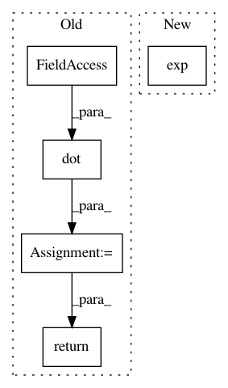

178553d4d4edfdc155d876c5ac75aaa1105445ee,src/spn/structure/leaves/conditional/utils.py,,get_scipy_obj_params,#Any#Any#,11
Before Change
def get_scipy_obj_params(node, obs):
if isinstance(node, Conditional_Gaussian):
mean = node.inv_linkfunc(np.dot(obs, node.weights))
assert len(mean) == obs.shape[0]
// assert len(node.mean) == obs.shape[0]
// assert len(node.stdev) == obs.shape[0]
return norm, {"loc": mean, "scale": node.stdev} // should be a vector, instead of a scalar
elif isinstance(node, Conditional_Poisson):
// assert len(node.mean) == obs.shape[0]
After Change
return norm, {"loc": mean, "scale": np.ones(obs.shape[0])}
elif isinstance(node, Conditional_Poisson):
mu = np.exp(pred)
return poisson, {"mu": mu}
elif isinstance(node, Conditional_Bernoulli):
p = logit(pred)
In pattern: SUPERPATTERN
Frequency: 3
Non-data size: 5
Instances
Project Name: SPFlow/SPFlow
Commit Name: 178553d4d4edfdc155d876c5ac75aaa1105445ee
Time: 2018-08-15
Author: molina@cs.tu-darmstadt.de
File Name: src/spn/structure/leaves/conditional/utils.py
Class Name:
Method Name: get_scipy_obj_params
Project Name: freelunchtheorem/Conditional_Density_Estimation
Commit Name: 33ee09c30ce5979b5f5074e08510a31ef5fa663c
Time: 2019-01-30
Author: jonas.rothfuss@gmx.de
File Name: cde/density_estimator/LSCDE.py
Class Name: LSConditionalDensityEstimation
Method Name: _pdf
Project Name: SPFlow/SPFlow
Commit Name: c52045a02486d7c3793b1083f5b281a1e5fdb4fb
Time: 2018-09-11
Author: molina@cs.tu-darmstadt.de
File Name: src/spn/structure/leaves/conditional/utils.py
Class Name:
Method Name: get_scipy_obj_params